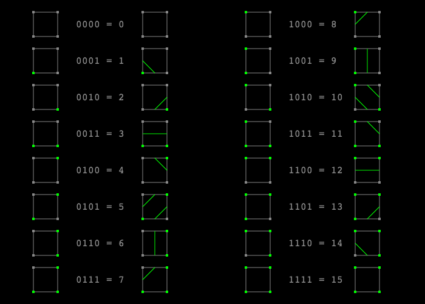
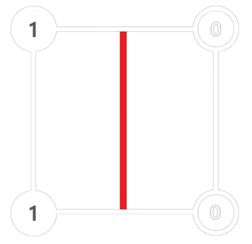
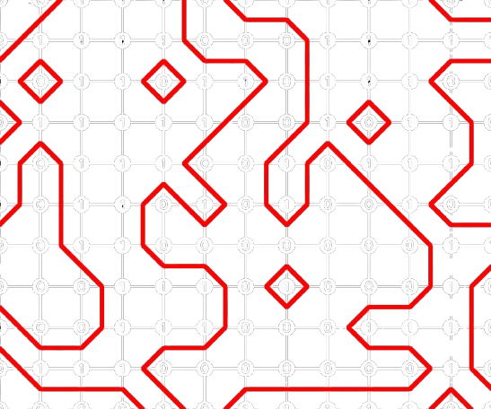

Introduction
This webpage introduces the concept of Marching Squares, a computer graphics algorithm used for isocontouring from a grid of scalar values.
Explanation
1. Create a square with either 0 or 1 on each of its corners

2. Identify where the square is classified in the look-up table

3. Draw the line of the according index

4. Repeat in a grid
